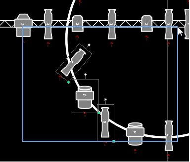

Magic sheets can be navigated using a mouse, a keyboard, a touchscreen, or a multi-touch touchscreen. The drag and drop function for placing objects is a single touch action or done using a mouse.
Additional mouse commands include:
Selecting from left to right will open the blue window selection box. This selects any object that is completely inside the box. This can be done with a single touch or using a mouse.

Selecting from right to left will open the green crossing selection box. This selects any object that either crosses the boundary line of the box or is completely inside of it. This can be done with a single touch or using a mouse.
The following multi-touch gestures can be used with an external multi-touch touchscreen or the on-board monitors on Eos Ti, Gio, and Gio @ 5. Multi-touch is not available on the on-board monitors of Eos.
The following multi-touch gestures can be used with monitors that support 3 or more simultaneous touches:
With an external alphanumeric keyboard attached, the following keyboard shortcuts can be used: